只有 48 小时的曼谷假期，如何才能不从众，又体验到曼谷的多重风味？
国庆的毛里求斯假期，我们路过曼谷，用 48 小时定制了一份都市绿洲与老城叙事的双重香味：前调是在 Samanto 的安缦花园清新、Dusit Central Park 都市绿洲的现代冷冽；后调是麒麟茶室东方美学的诡魅、湄南河畔 Hong Sieng Kong 百年老宅沉淀的时光烟火。
一半是绿洲的呼吸，一半是老城的低语。曼谷的多重风味，终在 48 小时内沉淀为独属于你的城市记忆。
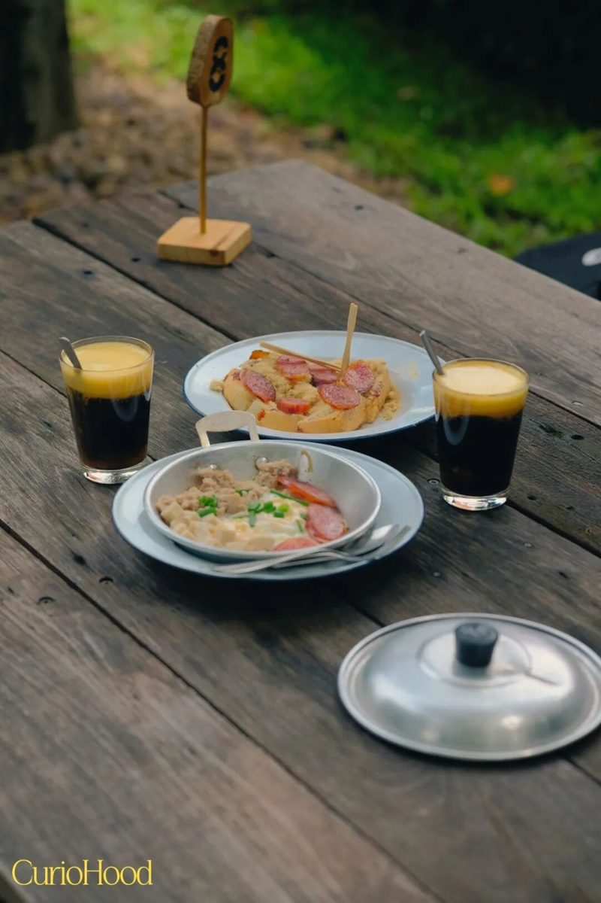
安缦同款后花园，泰式早餐
如果已逛腻曼谷的热闹模式，不妨拐进奈乐庄园（Nai Lert Garden），用慢的方式开启曼谷。
这里是曼谷安缦酒店的隐世绿洲：老榕树、百年老宅、静谧庭院。踏入安缦后花园，却只需平民价。庄园内的 Samanto 早餐店是懂的人才会找的宝藏：点一份泰式平锅煎蛋，配一杯泰式咖啡加卡仕达奶油，坐在树荫下慢慢吃，看光影洒落。
地址：Nai Lert Garden, 4 Soi Somkid, Ploenchit Rd.（轻轨 Phloen Chit 站步行 8 分钟）
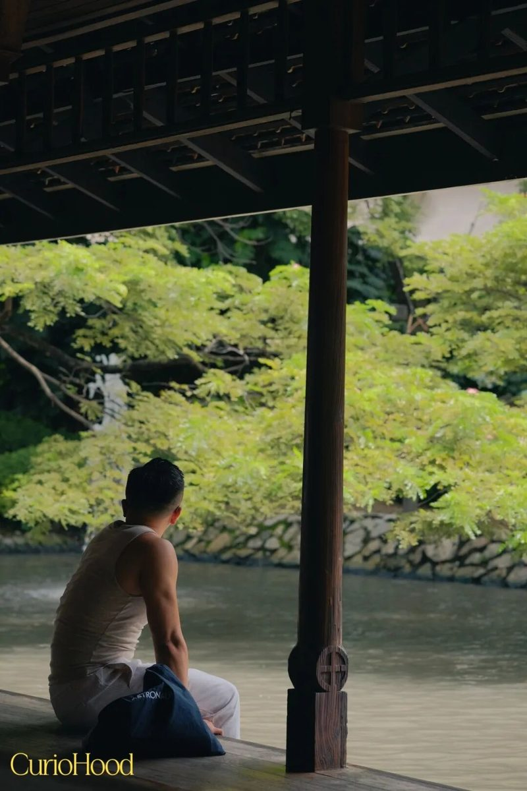
空中绿洲：曼谷的"曼哈顿"
1.12 万平米空中花园。 这片泰国顶流绿洲纵跨 4 至 7 层，8 大功能空间里必逛三处：鸟巢观景台（伦披尼公园全景）、水瀑布（重现经典酒店景观）、Dusitpini 圆形剧场（露天音乐会）。
小众香氛控天堂。 泰国高端品牌 Panpuri（安达曼海系列香水油，留香持久）、新锐品牌 O.B.A.（果香调，小众不撞香）专柜随手入；Good Goods 设计店的大象编织包和靛蓝染布超有特色，收入支持本地社区。
平价米其林聚集地。 LG 层 Parkside Market 集结 22 家米其林指南餐厅，人均 50 元吃遍泰北风味面和网红蓝面条。
交通：BTS 沙拉铃站 / MRT 是隆站直达，无缝连接伦披尼公园。打卡时间建议下午 4 点后，日落时分的鸟巢观景台超出片；周末人多，建议工作日冲。
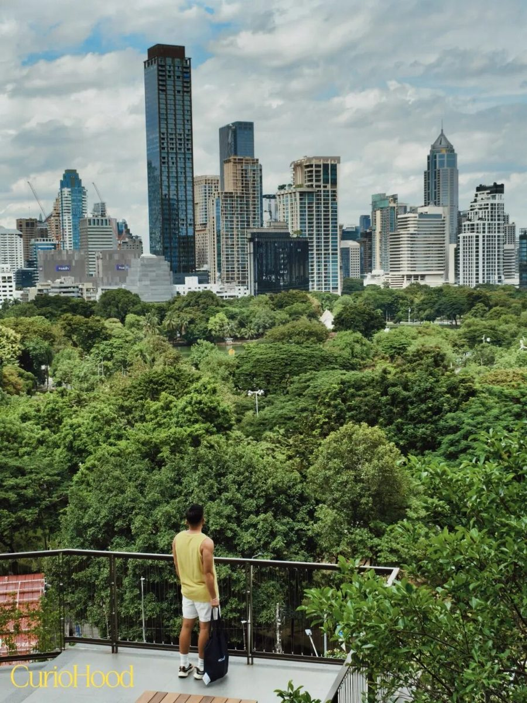
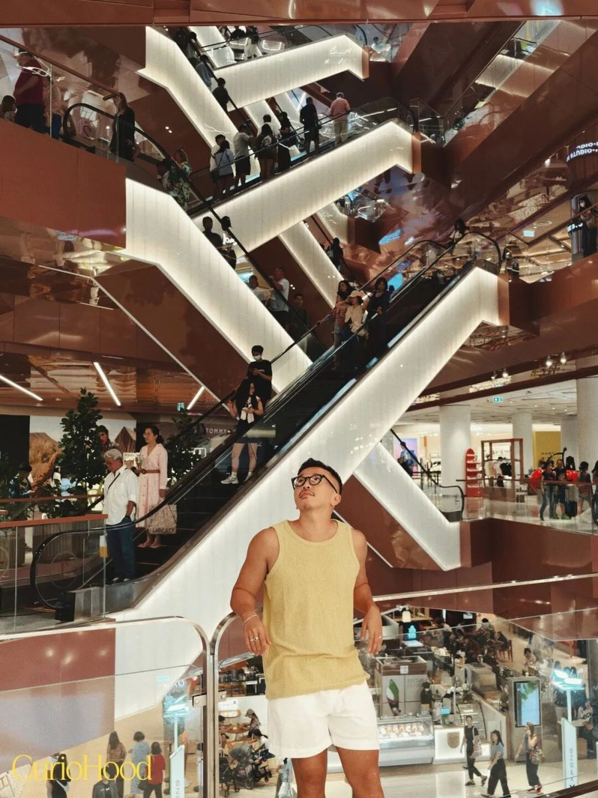
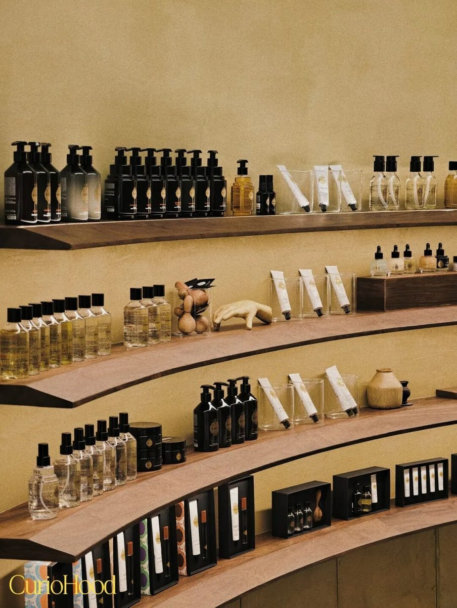
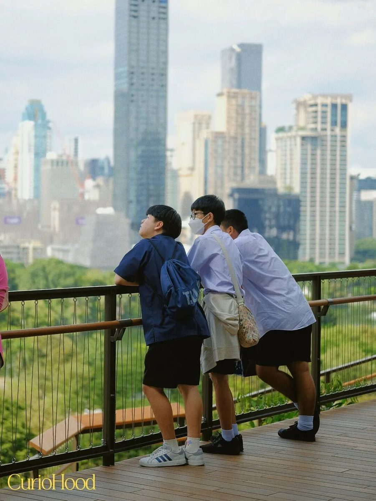
老城的中式茶馆：麒麟茶馆
踏入麒麟茶馆，仿佛穿越至明清豪门宅院。三层空间陈列着八仙台、西洋画等中西古董，背景萦绕戏曲音韵，氛围诡魅而华丽。
老板是马来西亚华人，热衷中国文化。店里有创意茶饮与甜品："贵妃出浴"茶、金鱼汤圆，还可以体验清代服饰拍照。这里不仅是茶馆，更是一座小型博物馆。
地址：1862 Maitri Chit Rd, Pom Prap, Bangkok；时间：11:00-19:00（周二休息，仅收现金）
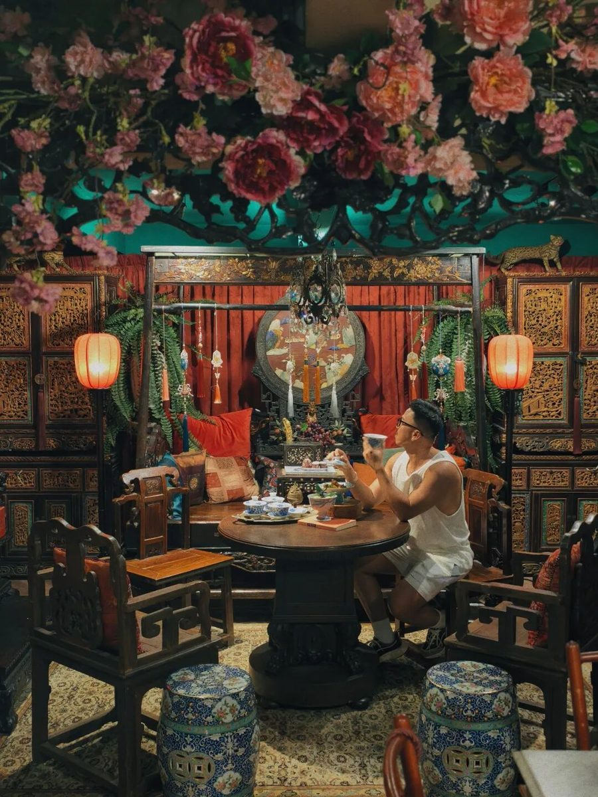
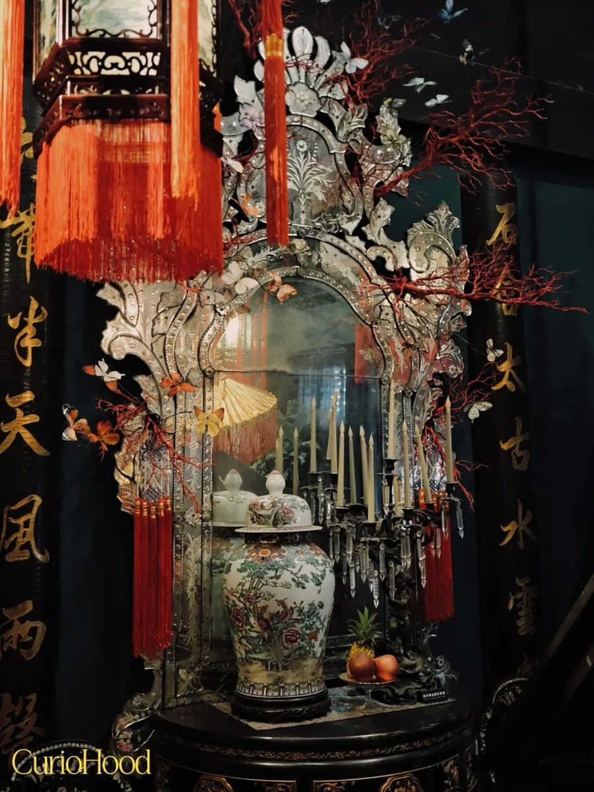
200 年历史的中式古董咖啡馆
位于曼谷 Talat Noi 社区的 Hong Sieng Kong，由 6 座超过 200 年历史的中式建筑组成，原为华商经营的木炭厂和仓库，经洪氏家族改造后成为融合咖啡馆、古董展览与文化活动的文艺空间。
店内保留原始结构，陈列着 60 至 500 年历史的古董藏品，宛如一座活态博物馆。标志性的千年古树盘根错节攀附墙面，形成"古墓丽影"般的视觉震撼；湄南河畔的室外座位可以看日落与河景，傍晚常有现场音乐。
在百年建筑里喝一杯泰式奶茶，傍晚蓝调时分沿河散步，就是 Talad Noi 老城区的慢生活。地址：Talad Noi 区湄南河畔，近顺兴宫；时间：周二至周日 10:00-18:00（周一休息）
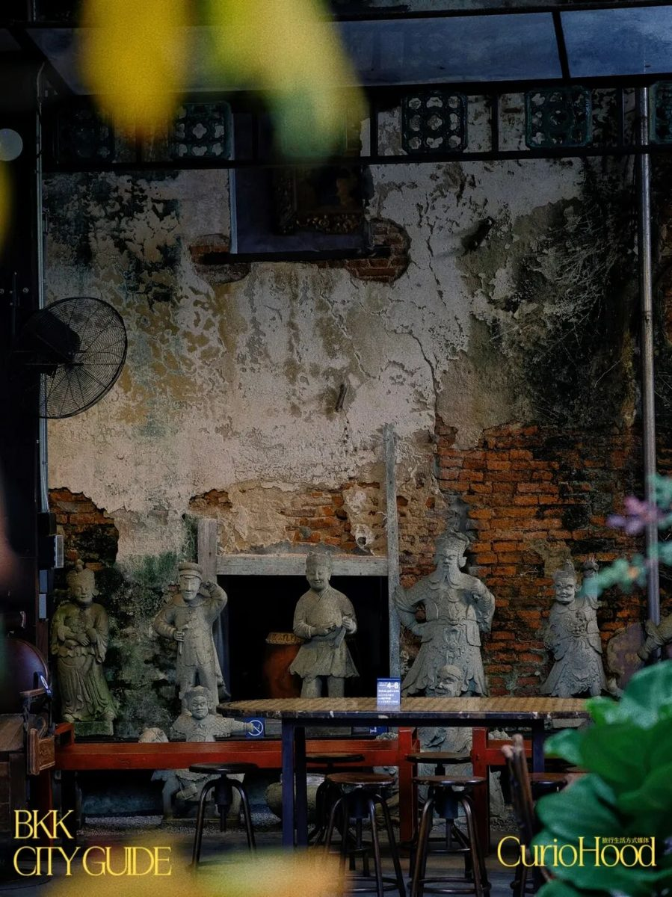
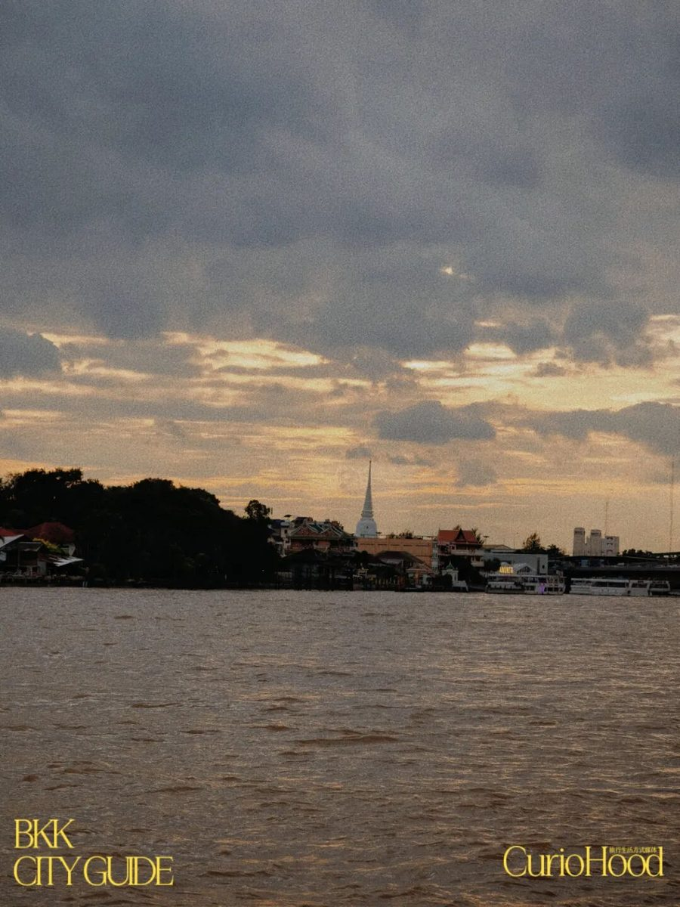
人人都爱逛的曼谷"安福路"
嵩越路（Song Wat Road）是曼谷老城区一条百年街道，由拉玛五世亲自规划命名，曾是泰国早期商业贸易的核心街区，正大集团等企业均在此发迹。它被《Time Out》评为"2023 年全球最酷街区之一"。
斑驳的骑楼间涌现出精品咖啡馆、手作文创店和艺术画廊：冠军烘焙的 Song Wat Coffee Roasters、本土香薰店 Copenn。老字号也依然鲜活：百年潮州包子店 Gu Long Bao、米其林必比登推荐的 Lim Lao Ngow 鱼丸面，还有牛面王的招牌牛肉面。
交通：MRT 至 Wat Mangkon 站步行抵达，或从 Ratchawong 码头乘船体验河岸风光。若想为一天收尾，可以去 Silom 的 BEEF 酒吧钻进人群，感受曼谷本地人的彩虹夜生活；更爱市井烟火的话，Jeh O Chulaa 深夜食堂的一碗酸辣海鲜妈妈面，足以唤醒味蕾。
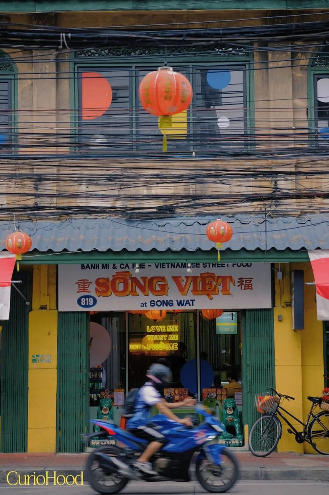
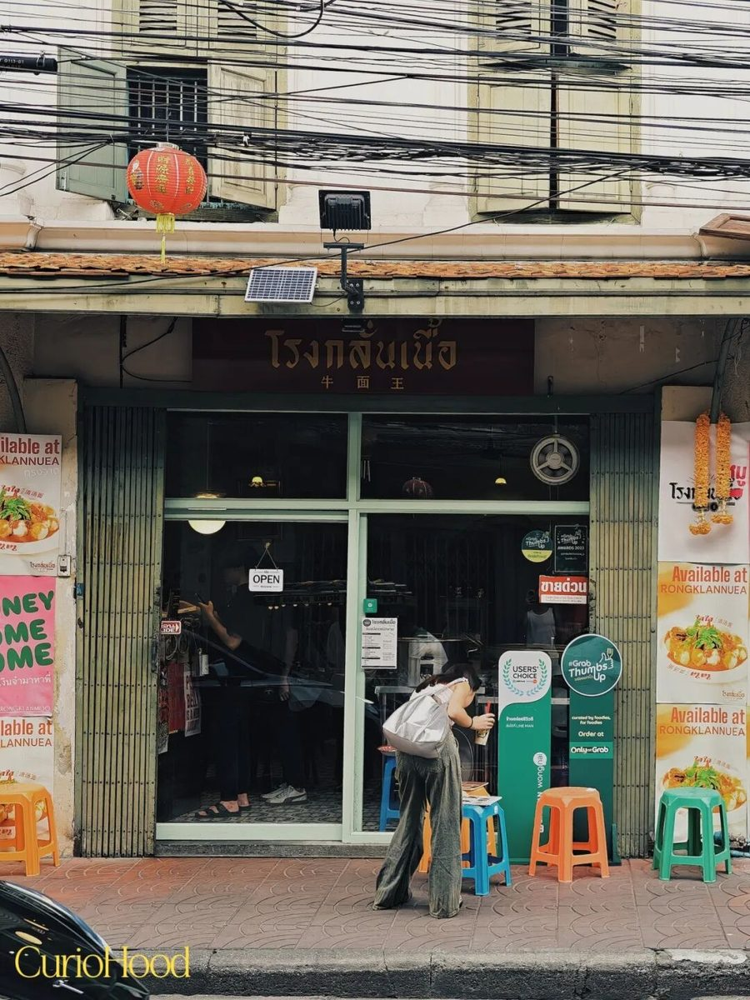
曼谷的真正魅力，藏于都市绿洲的静谧与老城砖瓦的纹理之间。这趟 48 小时旅程，不是打卡清单的堆砌，而是一场与城市对话的私人叙事——让每一次转角都能遇见新的灵感。
curiohood · Stay Curious
事实核对：本文改写自 CurioHood（公众号 BOYHOOD珀琥）2025 年 10 月 10 日《曼谷的48小时，一份双味迷你CityWalk指南》；Samanto、Dusit Central Park、麒麟茶馆、Hong Sieng Kong、嵩越路各地址与营业时间均据原文。图片来自原文。